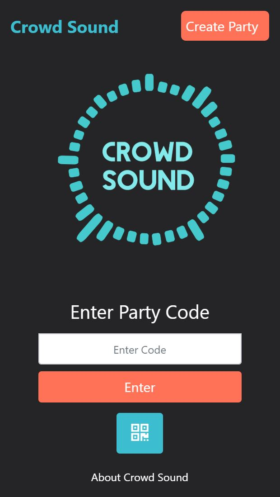
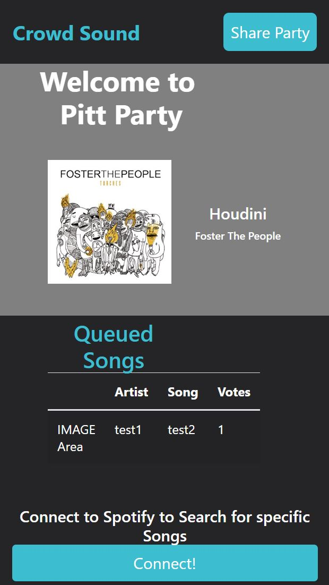

How Does CrowdSound Work?
CrowdSound is a web application that allows for users to create a "party" These parties can then be joined by others to allow for the party invitees to control what music they want to be played at the party by voting!

How Do I Join The Party!?
The image below shows how party-goers can get involved in choosing the music for their party.
Whether it's by requesting songs to be played, or voting on the currently queued list of songs,
the audience is in total control of the music that they hear!
